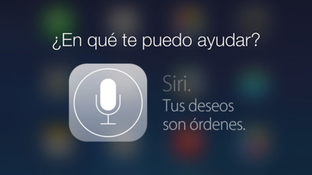

NOTICIAS
Alexa Amazon
Alexa es el asistente virtual controlado por voz creado por Amazon, y lanzado en noviembre de 2014 junto a su línea de altavoces inteligentes Echo. Su nombre fue elegido por tener una consonante fuerte al principio e incluir una x, algo que haría que el asistente reconociese más fácil su nombre, y también en honor a la Biblioteca de Alejandría. El funcionamiento de Alexa es muy parecido al de otros asistentes como Google Assistant, Siri y Cortana. Empiezas invocándolo diciendo su nombre, momento en el que el altavoz o dispositivo en el que esté integrado se pondrá a escuchar. Entonces debes decirle un comando con tu voz, y el asistente reconocerá lo que le preguntas y te dirá una respuesta.
Siri Apple
Los de Apple acaban de lanzar por sorpresa una nueva voz para su asistente inteligente y, ahora, es mucho más inclusivo que antes gracias al enfoque que le han dado. Siri es el asistente inteligente de Apple y tiene un funcionamiento bastante correcto, aunque queda algo por detrás de Alexa, por ejemplo. Eso sí, los de Cupertino no dejan de integrar nuevas características y funcionalidades a este asistente. "Oye Siri, compra pastillas de lavaplatos en Amazon" podría haber sido una petición habitual si Apple no hubiera cancelado este proyecto hace tres años. The Information asegura que en Cupertino estuvieron trabajando en esta posibilidad, pero que la desecharon. Lo más probable es que haya sido para mejor pues aunque hay muchos comandos para sacar partido a Siri, este tal vez hubiera sido demasiado. El proyecto se abortó debido en parte por las "estrictas medidas de privacidad que impedían a Siri asociar el Apple ID de un usuario a su voz". De haber superado estos obstáculos, un usuario podría comprar apps, películas y otras suscripciones de Apple. Previsiblemente, estas capacidades se hubieran trasladado a terceros más adelante